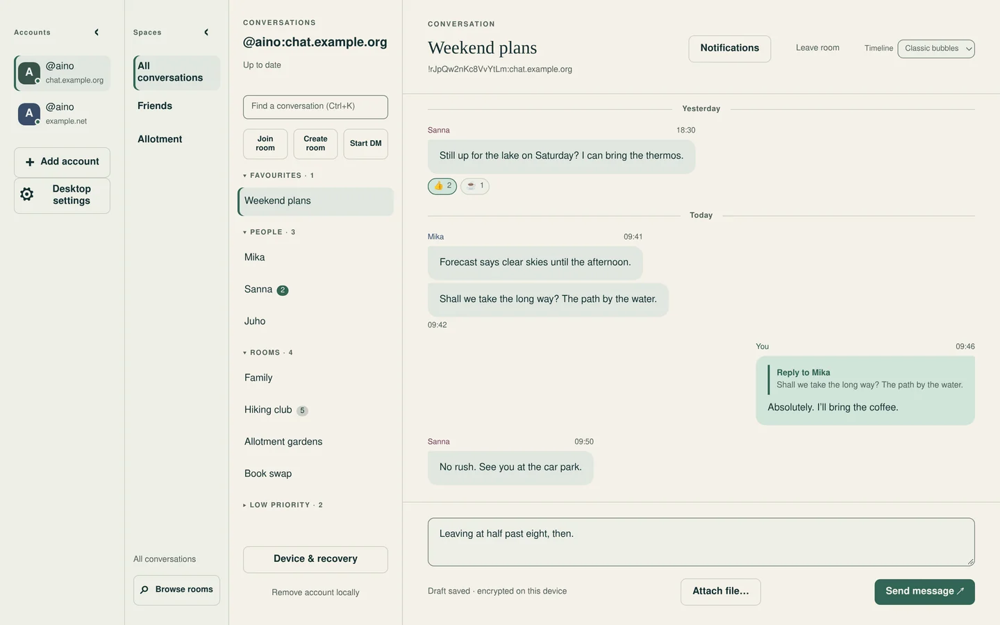
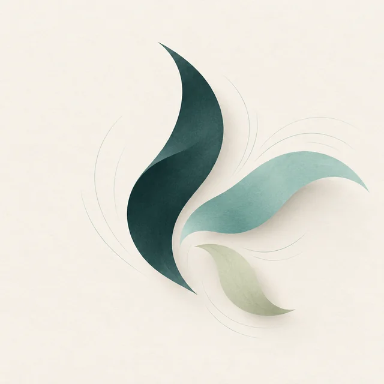

A quiet Matrix client for the desktop.
Kuiske keeps your Matrix accounts in one window, each with its own storage, credentials and encryption keys. Conversations are encrypted, history stays on your device, and the interface follows your system’s appearance.

What it does
Several accounts
Sign in to more than one Matrix account and switch between them in one window. Each account keeps separate storage, credentials and keys, and syncs on its own.
Conversations
Encrypted rooms and direct messages with saved history, drafts, replies, reactions, read markers, and image and file sharing. Verify your devices and restore keys with a recovery key.
The open network
Join rooms, browse spaces and talk across homeservers with the account you already have. Room notification settings sync with your other Matrix clients.
Where it stands
Kuiske is in early development. The first desktop milestone runs on Linux and on Apple Silicon Macs. Public downloads are not available yet, and mobile is being considered for after the desktop.
Kuiske is part of terva.sh. rihma handles the Matrix connection and tuohi hosts the desktop window. The name is Finnish for whispering.
